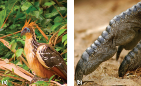
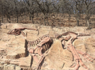
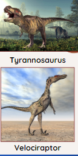
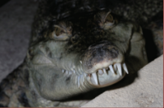
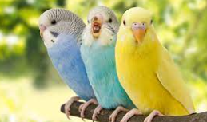
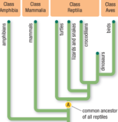

While birds have many unique and easily distinguished features, they are challenging to classify compared with other major groups. Fossil evidence links them closely with a group of carnivorous dinosaurs. Morphological and genetic evidence suggests that their closest living relatives are the crocodiles. Both the traditional and modern classifications of birds have advantages and disadvantages.
Callout
Modern Birds
Birds are among the most easily distinguished of all animals.
They are covered in feathers and have powerful wings and beaks.
Unlike most other vertebrates, birds lay hard-shelled eggs. Like mammals, birds are warm-blooded and have a four-chambered heart. Birds also show complex behaviours that distinguish them from many other groups of animals. Most birds construct nests, incubate their eggs, and feed and care for their young.
Taxonomists have wondered how birds should be classified: what other major groups of living animals are birds most closely related to?
Birds share some morphological features with reptiles: both have some similar skeletons, and both have scales on all or parts of their body.
This and the other physical evidence support the hypothesis that birds might be closely related to reptiles.

(a) An adult Hoatzin. Young chicks have a claw on each
wing, which they use for climbing trees to escape from predators.
(b) Birds have reptile-like scales on their legs and toes.
Feathers and Fossils
Discovered in 1861, Archaeopteryx was one of the first fossils
of a feathered animal. Archaeopteryx lived about 145 million
years ago. It had wings with prominent flight feathers and a
reptile-like jaw with many small teeth.

Callout
Since 1861, a great many dinosaur fossils have been discovered, but it was only recently that many beautifully preserved fossils of feathered animals were unearthed in northeastern China.
Since 1990, fossils of more than 20 different species of feathered animals have been discovered—almost all of them belonging to the theropod group of dinosaurs. The theropods are a well-known group of bipedal carnivores that includes Tyrannosaurus and Velociraptor. These feathered dinosaurs include species that clearly did not fly, as well as some that did.
The Question of Crocodiles
In addition to this dinosaur link, evidence also suggests a strong connection between birds and an unusual group of living reptiles—the crocodiles.
The crocodile group, or crocodilians, includes the well-
known alligators and crocodiles, as well as a number of other closely related species.
Crocodiles share many features with birds that they do
not share with other reptiles.
The only reptiles with four-chambered hearts.
With skeletal features shared only with dinosaurs and birds.
Among the very few reptiles that care for their young.
This evidence creates a taxonomic dilemma. Should crocodiles be considered reptiles if they are actually more closely related to birds than they are to lizards, snakes, and turtles? And if crocodiles are classified as reptiles, does that mean birds should be classified this way, as well?

Crocodilians are more genetically similar to birds than to any group of reptiles.
Timeline

Based on birds’ distinct features, traditional taxonomists placed them in their own taxon—class Aves.
The phylogenetic tree is based on the most recent scientific evidence.
It shows the evolutionary relationships between birds and other groups of four-legged vertebrates. The figure includes traditional taxonomic names and groupings (the orange boxes). Based on this tree, species A is the most recent common ancestor of all the traditional reptiles—turtles, lizards and snakes, crocodilians, and the extinct dinosaurs.
